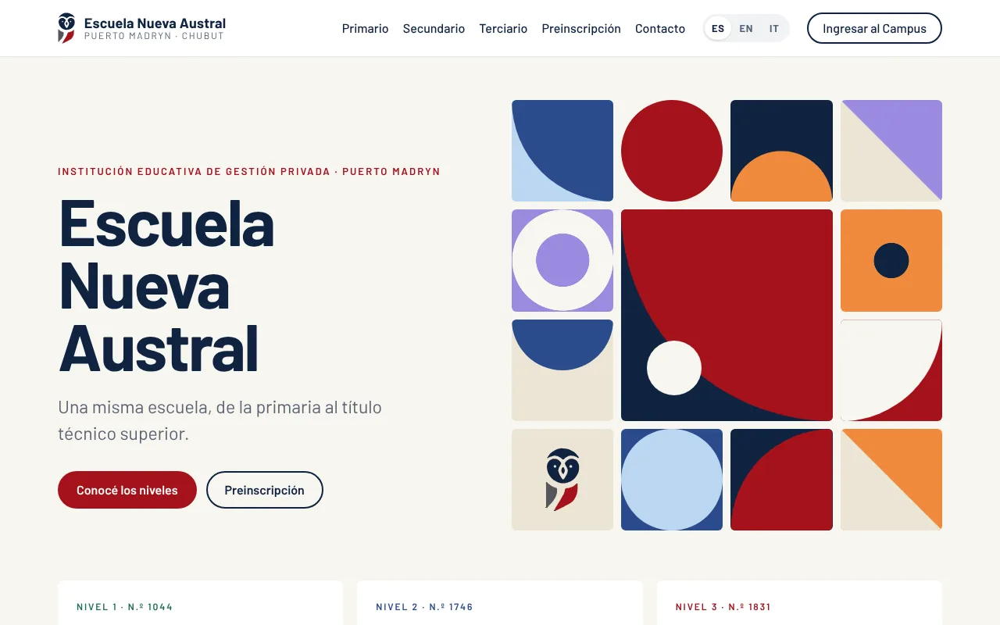

Sitio institucional
La cara pública de la escuela, editable desde el Campus sin tocar código.
- Portada animada y una página por nivel
- Castellano, inglés e italiano
- Novedades, Instagram y contacto de cada nivel
- Instalable en el celular
Caso de estudio · en producción desde 2026
Diseñé y desarrollé la plataforma de la Escuela Nueva Austral, en Puerto Madryn: el sitio institucional, la preinscripción en línea, la gestión académica, las aulas virtuales, el correo y la cobranza con factura electrónica. Funciona para tres niveles a la vez, cada uno con su dirección, sus alumnos y sus datos, sin que ninguno vea lo del otro.

El punto de partida
La Escuela Nueva Austral tiene Primario, Secundario y un Instituto Superior que abre la Tecnicatura en Tecnologías Aplicadas. Cada nivel tiene su propia dirección, su número oficial y su forma de trabajar, pero comparten la administración y las familias.
Antes de la plataforma, eso se resolvía con planillas, grupos de WhatsApp y correos sueltos:
cada uno con su dirección, sus alumnos y su cobranza
Qué construí
Doce módulos que se hablan entre sí. Cada persona entra con su usuario y ve solo lo que su cargo le permite, en su nivel.
La cara pública de la escuela, editable desde el Campus sin tocar código.
De la consulta en el sitio a la matrícula, sin papeles.
La estructura de la escuela y el legajo de cada alumno.
Un aula por materia, propia de la escuela, sin plataformas externas.
Videollamadas desde el aula, con la clase agendada para todo el curso.
Lo que antes iba por WhatsApp, ordenado y con registro.
Casillas del dominio de la escuela, leídas y respondidas desde el Campus.
El circuito completo del dinero, por nivel y por familia.
De alumnos y de personal, con un panel para la dirección.
Un alta y la persona ya tiene sus cursos, su horario y su acceso.
Datos de menores tratados como lo que son.
Nada llega a la escuela sin pasar antes por un entorno de pruebas.
Capturas
El sitio público y el Campus por dentro. Tocá una imagen para verla grande.
Las capturas del Campus son de un entorno de prueba con datos inventados. Ningún dato real de la escuela aparece en esta página.
Cómo está hecho
Es una escuela real con datos de chicos: no hay lugar para probar en producción. Por eso cada cambio sigue el mismo camino.
Los datos de prueba nunca pasan a producción, y después de cada publicación se verifica que el sitio, el correo y las aulas sigan funcionando.
Cada consulta lleva el nivel de quien la hace. Una persona de Primario no puede leer ni por error un dato de Secundario, y cada dirección administra solo su nivel.
93 permisos repartidos en 14 cargos, con alcance por nivel o por división y fechas de vigencia. Cada otorgamiento y cada revocación quedan registrados.
Copias cifradas todos los días y una vez por mes una restauración completa en una base aparte, comparando tabla por tabla con el original.
Factura electrónica con ARCA, correo propio del dominio con recepción y envío, videollamadas integradas en el aula y recordatorios automáticos por correo.
La facturación parte de una base de código abierto (Crater, de Bytefury); todo lo escolar es desarrollo propio.
Detalles
¿Tu institución necesita algo así?
Colegios con varios niveles, institutos de formación superior o cualquier organización que hoy se maneja con planillas. Contame cómo trabajan y vemos qué les sirve.